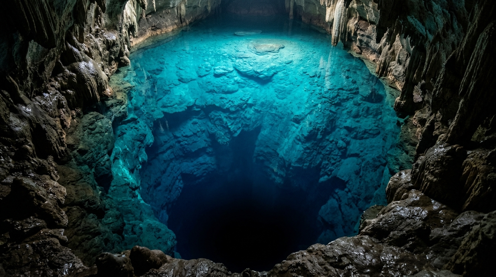
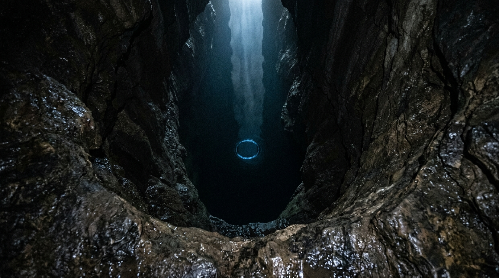
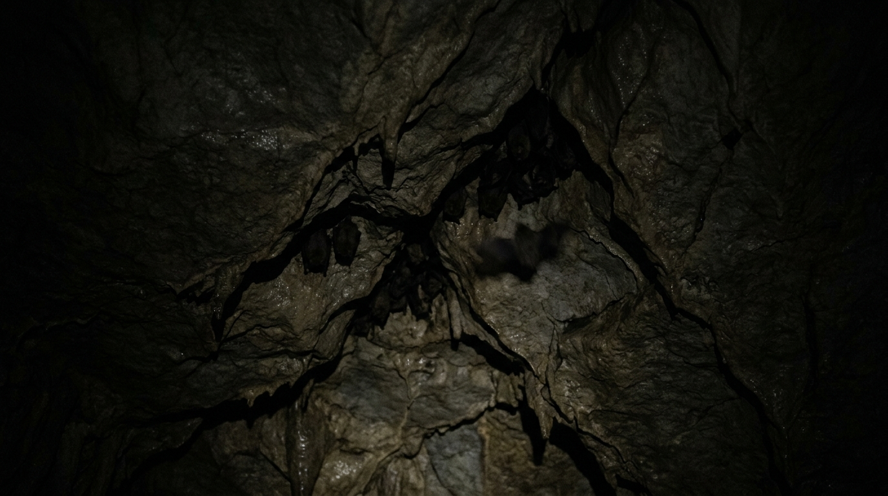
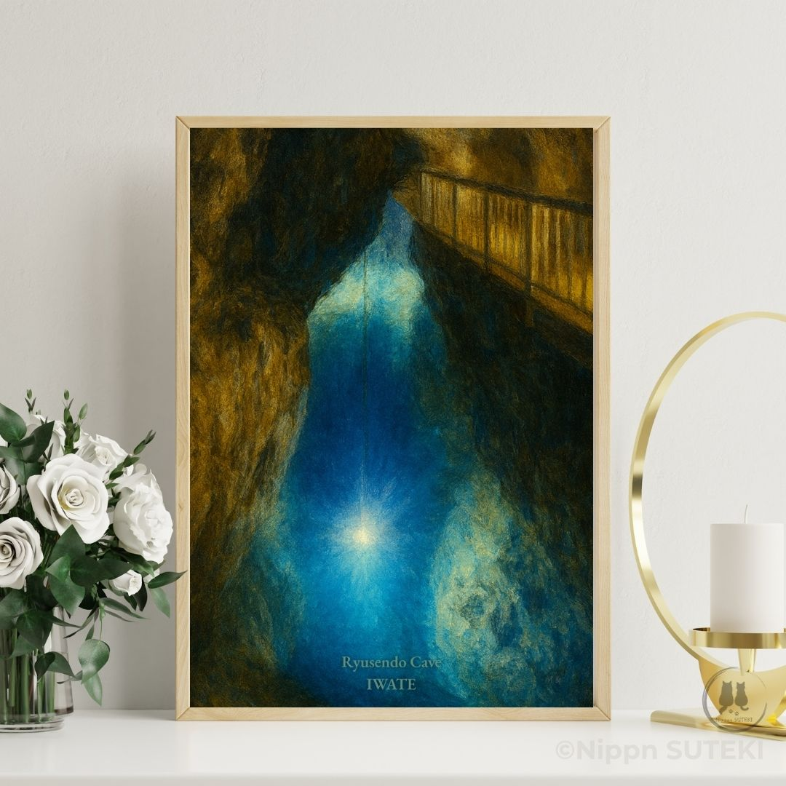

Nobody's Found the Bottom of Ryusendo Cave (And I Have Thoughts)
The parts of the story Kiri politely left in the dark
by Sari
Hey hey, it's Sari! 🐾
Wait — did you read Kiri's post about this exact same blue lake? She wrote this whole beautiful thing about dragons and legends and the town's water. She stared at the poster layout forever before she wrote a single word — you know Kiri, she only does that when something is super mega beautiful.
Well, I stared at it too. Except I noticed something she didn't really talk about. Something a little more, um, unsettling.
Ryusendo Cave, in Iwate — it looks like a giant glowing sapphire hidden deep inside the earth. I want to jump right in! …Wait, cold water? Umm, maybe I'll just watch from here instead.
The Science of "Dragon Blue" (And the Part That Gets a Little Creepy)
People call this shade "Dragon Blue." It's not just normal water — it's rain and snowmelt filtered through layers and layers of ancient limestone for decades. Because it's so impossibly pure, when light hits it, the water absorbs red wavelengths and reflects this dazzling, electric turquoise-blue. It looks like magic, but it's real science!
…But — hey — did you hear that? Look closely at the bottom of the lake. It's so clear you can see dozens of meters down, right? But what happens past the light? Isn't it getting a bit dark down there? Like… really dark? Is it just me, or does the water look like it's pulling you in?

The Radiant Dragon Blue — clear enough to see down, and down, and down.
Into the Unmapped Depths
Did you know divers have been exploring Ryusendo since the mid-20th century? They put on heavy oxygen tanks and plunged straight into complete darkness. The third underground lake is 98 meters deep, and the fourth one goes past 120 meters. And guess what — nobody has reached the absolute bottom or mapped the entire cavern system yet. It just keeps going, deeper into the unknown earth.
There are even local rumors — they say if you stare too long into the hypnotic Dragon Blue, the water hypnotizes you, and pulls you right down into the abyss. What if there are endless underwater tunnels where light has never reached since the dawn of time? …Okay, I am grabbing your sleeve with my paws now, don't leave me!

Abyssal darkness — the unmapped depths of the 4th subterranean lake.
Invisible Dwellers of the Dark
You'd think nothing could live in a pitch-black cave underwater, right? Wrong! There are whole ecosystems down there — eyeless, completely transparent shrimp and centipedes that evolved in total darkness. Kiri told me once, "Every creature adapts to its home, Sari, even in the dark." She's always so calm about creepy stuff… but transparent alien shrimp? That's crazy!
And five different species of bats live in the upper ceilings. Locals call them the "Guardians of the Netherworld." But you know what the spookiest rumor is? People whisper that in the deepest, untouched lakes, where no human light has ever shone, something is still lurking in the quiet dark…

Guardians of the Netherworld, keeping watch overhead.

Available now as an art poster — the blue, minus the part where it grabs your sleeve.
So Ryusendo isn't just a pretty "Instagram-worthy" spot for an art poster. It's a place where breathtaking beauty meets real, mysterious depth. That's why this poster captures both. When people hang this print on their wall, they aren't just looking at pretty blue water — they're looking at a gateway into Japan's deep, secret underground world.
Kiri showed you the water's heart. I'm showing you what's waiting underneath it.
"When you gaze into the Dragon Blue… remember: something deep down in the dark might just be gazing back at you! …Eek! Okay, blog post finished! Time for treats!"